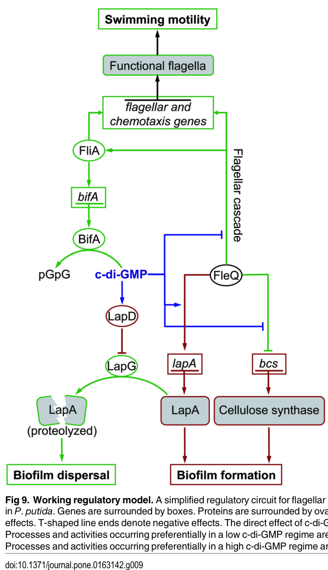

FleQ is an NtrC-family, sigma-54-associated AAA+ transcriptional regulator that acts as the master controller of flagellar biogenesis in Pseudomonas putida KT2440. Under low c-di-GMP it activates the flagellar transcriptional cascade through sigma-N-dependent promoters, whereas c-di-GMP-responsive promoter control redirects FleQ activity toward adhesin and exopolysaccharide loci such as lapA, lapE, and bcs to coordinate the transition from motility to surface attachment and biofilm growth. ChIP-seq and targeted promoter studies support a broader regulon that includes additional adhesion, exopolysaccharide, iron-homeostasis, and type VI secretion genes, but the clearest core functions remain flagellum regulation and c-di-GMP-responsive control of biofilm-associated transcription.
Definition: Catalysis of transcriptional activation by a bacterial enhancer-binding protein that binds specific DNA sequences and uses ATP-dependent remodeling to activate RNA polymerase containing sigma-54 at target promoters.
Justification: FleQ and related enhancer-binding proteins are currently forced into generic DNA-binding transcription activator activity and ATP binding terms, which do not capture the sigma-54-specific promoter class or ATP-dependent remodeling mechanism.
Parent term: DNA-binding transcription activator activity
| GO Term | Evidence | Action | Reason |
|---|---|---|---|
|
GO:0005524
ATP binding
|
IEA
GO_REF:0000002 |
ACCEPT |
Summary: Accurate and core. FleQ is an AAA+ enhancer-binding transcriptional regulator with a central ATPase/sigma-54 interaction domain, and ATP binding is mechanistically required for its transcriptional control of flagellar promoters.
Reason: Although generic, ATP binding is part of the core mechanism of a sigma-54 bacterial enhancer-binding protein rather than an incidental property.
Supporting Evidence:
file:PSEPK/fleQ/fleQ-uniprot.txt
UniProt and InterPro annotate FleQ, AAA+ ATPase, and sigma-54 interaction domains in Q88ET0
PMID:30177764
central AAA+/ATPase σ54 (RpoN)-interaction domain
file:PSEPK/fleQ/fleQ-deep-research-falcon.md
**FleN is required for full c-di-GMP-dependent activation** at certain matrix promoters and that **ATP hydrolysis is required for flagellar gene expression**, but not necessarily for matrix gene regulation.
|
|
GO:0006355
regulation of DNA-templated transcription
|
IEA
GO_REF:0000002 |
KEEP AS NON CORE |
Summary: Correct but overly broad for FleQ. The gene product is a global transcriptional regulator with separable flagellar-activation and biofilm-control branches, so this parent term is best retained as non-core while more informative child terms are added below.
Reason: FleQ clearly regulates transcription, but this term is too unspecific to represent the biologically informative functions of the protein.
Supporting Evidence:
PMID:27636892
coordinate regulation of multiple functions related to motility and surface colonization in Pseudomonas putida
PMID:30177764
Putative genes regulated by FleQ included, as expected, flagellar and motility-related genes
file:PSEPK/fleQ/fleQ-deep-research-openai.md
master activator of flagellar biogenesis in pseudomonads
file:PSEPK/fleQ/fleQ-deep-research-falcon.md
FleQ acts as a **bifunctional regulator**: typically activating motility/adhesion genes and repressing some EPS genes.
|
|
GO:0043565
sequence-specific DNA binding
|
IEA
GO_REF:0000002 |
ACCEPT |
Summary: Accurate and core. FleQ directly binds specific promoters in the flagellar region and at biofilm-associated loci including lapA, bcs, lapE, and cyaA, establishing sequence-specific promoter recognition as a central molecular function.
Reason: Direct DNA-binding evidence exists in KT2440 for multiple named targets, and this function underlies both the motility and biofilm branches of FleQ regulation.
Supporting Evidence:
PMID:27120564
In vitro experiments show that FleQ binds to lapA and bcs promoter DNA
PMID:33975969
Both in vitro and in vivo assays show that FleQ binds directly to promoters of the five genes
file:PSEPK/fleQ/fleQ-deep-research-falcon.md
promoter fragments predicted to contain FleQ boxes shifted upon incubation with purified FleQ, while control fragments lacking predicted motifs did not.
|
|
GO:0001216
DNA-binding transcription activator activity
|
IDA
PMID:27636892 Complex Interplay between FleQ, Cyclic Diguanylate and Multi... |
NEW |
Summary: FleQ is a bona fide DNA-binding transcription activator for the flagellar cascade. Under low c-di-GMP it activates sigma-N-dependent promoters in the flagellar regulon, and multiple KT2440 studies describe FleQ as the master activator of flagellar gene expression.
Reason: The seeded IEA set captures DNA binding and generic transcription regulation but misses FleQ's specific activator role.
Supporting Evidence:
PMID:27636892
Low cyclic diguanylate levels favor FleQ interaction with σN-dependent promoters to activate the flagellar cascade
PMID:30177764
It has been described that FleQ is able to activate the expression of genes involved in flagellar export
file:PSEPK/fleQ/fleQ-deep-research-falcon.md
FleQ directly activated a subset of σ54-class promoters, including **PflgB, PflhA, and PflgA**
|
|
GO:1902210
positive regulation of bacterial-type flagellum assembly
|
IMP
PMID:30177764 Genome-wide analysis of the FleQ direct regulon in Pseudomon... |
NEW |
Summary: FleQ positively regulates flagellum assembly by driving transcription of flagellar biogenesis genes. fleQ mutants are non-motile and aflagellated, and ChIP-seq/promoter analyses place FleQ directly upstream of multiple flagellar loci required for assembly.
Reason: This term captures the specific biological outcome of FleQ's best-established regulatory role better than generic motility or transcription terms.
Supporting Evidence:
PMID:30177764
mutations in the fleQ gene result in non-motile, aflagellated bacteria
PMID:28968917
FleQ positively regulates flagella biosynthesis but negatively regulates the type VI secretion system in P. putida
file:PSEPK/fleQ/fleQ-deep-research-falcon.md
In KT2440-focused work, FleQ activates multiple flagellar promoters and sits at the top of a multi-tier regulatory cascade.
|
|
GO:1900190
regulation of single-species biofilm formation
|
IMP
PMID:27636892 Complex Interplay between FleQ, Cyclic Diguanylate and Multi... |
NEW |
Summary: FleQ directly regulates the transition into the biofilm state by controlling transcription of adhesin and matrix-associated loci such as lapA, lapE, and bcs in a c-di-GMP-responsive manner. The literature shows clear FleQ dependence for biofilm formation, but because FleQ can activate some matrix genes and repress others, the broader regulation term is safer than forcing a purely positive label.
Reason: Biofilm control is a major experimentally supported branch of FleQ function, but the directionality is promoter- and c-di-GMP-state dependent.
Supporting Evidence:
PMID:27636892
Disruption of fleQ caused strong defects in flagellar motility, biofilm formation and surface attachment
PMID:27120564
FleQ acts as an activator of lapA, but a repressor of bcs
PMID:33975969
These results demonstrated that FleQ was essential for c-di-GMP-mediated biofilm formation and LapA secretion
file:PSEPK/fleQ/fleQ-deep-research-falcon.md
Deletion of fleQ caused a **~2-fold drop in lapA mRNA** and a **~32-fold increase in bcsD mRNA**.
|
|
GO:0035438
cyclic-di-GMP binding
|
IDA
PMID:27503246 FleQ of Pseudomonas putida KT2440 is a multimeric cyclic dig... |
NEW |
Summary: FleQ of P. putida KT2440 directly binds the second messenger c-di-GMP, as demonstrated by isothermal titration calorimetry. c-di-GMP binding to the AAA+ ATPase module is the molecular switch that redirects FleQ between flagellar activation and biofilm/matrix gene control, making this a core molecular function distinct from generic ATP binding.
Reason: The seeded IEA set captures ATP binding but misses FleQ's experimentally demonstrated direct c-di-GMP binding, which is the key ligand-sensing function underlying its lifestyle-switch behavior.
Supporting Evidence:
PMID:27503246
we show in this work that FleQ of P. putida interacts with c-di-GMP and directly binds the promoter regions of flagellar and EPS genes
file:PSEPK/fleQ/fleQ-deep-research-falcon.md
FleQ is also described as a **c-di-GMP-binding** multimeric regulator, consistent with AAA+_ATPase, FleQ, and CheY-like/receiver-like domain annotations.
file:PSEPK/fleQ/fleQ-deep-research-falcon.md
**c-di-GMP** binds FleQ’s AAA+ region/Walker A-associated ATPase module and **inhibits ATPase activity**, shifting FleQ from flagellar activation toward biofilm-associated regulation.
|
Q: Which FleQ-regulated iron-homeostasis genes are direct physiological targets in KT2440 under rhizosphere-relevant iron limitation, and are these roles core or context-specific?
Q: What promoter or cofactor features determine whether c-di-GMP-bound FleQ activates versus represses a given surface-associated operon in P. putida?
Q: How much of the reported type VI secretion phenotype reflects direct FleQ control versus secondary remodeling of the motility-biofilm regulatory network?
Experiment: ChIP-seq across low- and high-c-di-GMP states with matched RNA-seq in KT2440 to separate constitutive FleQ binding from c-di-GMP-dependent transcriptional output
Hypothesis: FleQ occupancy will remain at many promoters while c-di-GMP changes the transcriptional outcome and cofactor usage rather than simple DNA binding
Type: Differential ChIP-seq plus transcriptomics
Experiment: Promoter mutagenesis and in vitro transcription assays for fleS-fliF, flhA, lapA, bcs, and lapE promoters using purified FleQ with ATP, c-di-GMP, and FleN
Hypothesis: Distinct promoter architectures encode the activator-versus-repressor logic of FleQ and explain the opposite responses of lapA and bcs
Type: Promoter mutagenesis, EMSA, and in vitro transcription
Experiment: Separation-of-function FleQ mutants targeting ATPase versus c-di-GMP-binding surfaces tested for motility, attachment, biofilm, and root colonization phenotypes
Hypothesis: ATPase-deficient alleles will preferentially collapse the flagellar branch, whereas c-di-GMP-response mutants will uncouple motility from biofilm regulation
Type: Allelic replacement with phenotypic profiling
The research report should be a detailed narrative explaining the function, biological processes, and localization of the gene product. Citations should be given for all claims.
You should prioritize authoritative reviews and primary scientific literature when conducting research. You can supplement
this with annotations you find in gene/protein databases, but these can be outdated or inaccurate.
We are specifically interested in the primary function of the gene - for enzymes, what reaction is catalyzed, and what is the substrate specificity? For transporters, what is the substrate? For structural proteins or adapters, what is the broader structural role? For signaling molecules, what is the role in the pathway.
We are interested in where in or outside the cell the gene product carries out its function.
We are also interested in the signaling or biochemical pathways in which the gene functions. We are less interested in broad pleiotropic effects, except where these elucidate the precise role.
Include evidence where possible. We are interested in both experimental evidence as well as inference from structure, evolution, or bioinformatic analysis. Precise studies should be prioritized over high-throughput, where available.
The target protein described in UniProt as Transcriptional regulator FleQ with locus PP_4373 and accession Q88ET0 corresponds to the Pseudomonas putida KT2440 FleQ studied in multiple KT2440-focused primary papers (e.g., ChIP-seq regulon mapping; flagellar/biofilm regulatory studies), which explicitly name FleQ (PP_4373) and treat it as the master flagellar regulator and a c-di-GMP–responsive regulator affecting biofilm determinants such as lapA and the bcs cellulose operon. (blancoromero2018genomewideanalysisof pages 1-2, navarrete2019transcriptionalorganizationregulation pages 2-3)
FleQ is described as an atypical NtrC-family enhancer-binding protein (EBP) that functions within the σ54/RpoN transcription paradigm, with a tripartite architecture: an N-terminal REC-like (receiver-like) domain, a central AAA+ ATPase domain (containing the σ54 interaction functionality), and a C-terminal helix–turn–helix (HTH) DNA-binding domain. (blancoromero2018genomewideanalysisof pages 1-2, oladosu2024fliptheswitch pages 7-9)
A key noncanonical feature is that FleQ’s receiver-like region lacks the canonical conserved phospho-acceptor Asp typical of many NtrC-like response regulators, implying FleQ is not regulated by a cognate sensor kinase in the standard phosphorylation-dependent manner. (oladosu2024fliptheswitch pages 9-11)
Across Pseudomonas (including strains where this is best mechanistically studied), FleQ is summarized as a regulator that can function as both an activator and repressor, inversely regulating flagellar genes (planktonic motility) and biofilm/matrix genes (sessility). (oladosu2024fliptheswitch pages 1-3, blancoromero2018genomewideanalysisof pages 4-5)
In KT2440 specifically, FleQ is experimentally supported as:
- a master regulator of the flagellar cascade (top of hierarchy), and
- a direct regulator of biofilm determinants such as LapA adhesin (lapA) and the cellulose biosynthesis machinery (bcs operon). (navarrete2019transcriptionalorganizationregulation pages 2-3, jimenezfernandez2016complexinterplaybetween pages 15-17)
(A) Flagellar biogenesis / motility transcriptional cascade
In KT2440-focused work, FleQ activates multiple flagellar promoters and sits at the top of a multi-tier regulatory cascade. In one study using promoter fusions and heterologous expression, FleQ directly activated a subset of σ54-class promoters, including PflgB, PflhA, and PflgA, with induction of reporter expression on the order of ~4- to 7-fold. (jimenezfernandez2016complexinterplaybetween pages 15-17)
(B) Biofilm matrix and adhesion: LapA and cellulose (bcs)
FleQ directly modulates biofilm-relevant loci:
- lapA (encoding a large surface adhesin) is positively regulated by FleQ in KT2440, and
- bcsD (within the cellulose-associated bcs cluster) is negatively regulated by FleQ, with c-di-GMP modulating this output. (jimenezfernandez2016complexinterplaybetween pages 15-17)
Promoter binding at lapA and bcs
Direct binding of FleQ to the promoter regions of PlapA and PbcsD is supported by motif prediction plus EMSA. In electrophoretic mobility shift assays, promoter fragments predicted to contain FleQ boxes shifted upon incubation with purified FleQ, while control fragments lacking predicted motifs did not. Quantitatively, the EMSA used 0, 0.45, and 4.5 μM FleQ; 4.5 μM FleQ fully shifted motif-containing fragments (e.g., PlapA 550 bp and 297 bp fragments; PbcsD 263 bp fragment) but not motif-lacking fragments (e.g., PlapA 152 bp; PbcsD 200 bp). (jimenezfernandez2016complexinterplaybetween pages 17-18)
Genome-wide direct regulon by ChIP-seq
A genome-wide ChIP-seq analysis in KT2440 identified FleQ as a global regulator. Peak calling initially found 279 peaks in KT2440; applying a ≥5-fold enrichment threshold retained 103 peaks, of which 69.31% were intergenic and 98% were upstream of ORFs, leading to assignment of ~160 genes as likely directly regulated in KT2440. (blancoromero2018genomewideanalysisof pages 2-4)
This dataset supports direct regulation beyond classic motility genes, including adhesion/biofilm-related targets and other cellular functions; importantly, it also provides a statistical, genome-scale basis to distinguish likely direct targets (ChIP peaks near promoters) from indirect effects. (blancoromero2018genomewideanalysisof pages 2-4)
c-di-GMP modulation in KT2440 outputs
In KT2440, c-di-GMP modulates FleQ’s transcriptional outputs at key biofilm loci:
- For bcsD, qRT-PCR reported ~32-fold higher bcsD mRNA in a fleQ mutant than in wild-type (consistent with FleQ repression). (jimenezfernandez2016complexinterplaybetween pages 15-17)
- For lapA, qRT-PCR reported ~2-fold higher lapA mRNA in wild-type than in a fleQ mutant (consistent with FleQ activation). (jimenezfernandez2016complexinterplaybetween pages 15-17)
- c-di-GMP state reshapes these differences: PlapA activation by FleQ was reported as ~4-fold (low c-di-GMP) and ~10-fold (high c-di-GMP) higher in wild-type than in a fleQ mutant, while PbcsD became highly expressed under high c-di-GMP and comparatively FleQ-unresponsive. (jimenezfernandez2016complexinterplaybetween pages 15-17)
FleN modulation in KT2440
In KT2440, FleN (also called FlhG/MinD2 in some contexts) antagonizes FleQ-dependent activation of σ54-class flagellar promoters and participates in regulation of adhesion/biofilm loci; in a focused operon/promoter study, promoters driving the flhA–flhF–fleN–fliA region were positively regulated by FleQ and negatively regulated by FleN, with epistasis suggesting FleN acts as a FleQ antagonist. (navarrete2019transcriptionalorganizationregulation pages 13-15)
Transferable mechanistic model from 2023–2024 synthesis
A 2024 authoritative review synthesizes structural and biochemical evidence (primarily from P. aeruginosa but presented as conserved across Pseudomonas) that c-di-GMP binds the AAA+ ATPase domain of FleQ and allosterically inhibits ATPase activity, enabling FleQ to switch from flagellar activation to matrix gene activation/repression at a single promoter without dissociation. The review also emphasizes that FleN is required for full c-di-GMP-dependent activation at certain matrix promoters and that ATP hydrolysis is required for flagellar gene expression, but not necessarily for matrix gene regulation. (oladosu2024fliptheswitch pages 9-11, oladosu2024fliptheswitch pages 7-9)
Because this mechanistic model is tied to conserved FleQ architecture and to c-di-GMP/FleQ behavior that is experimentally observed in KT2440 at lapA/bcs outputs, it provides a strong explanatory framework for how KT2440 FleQ (Q88ET0) integrates c-di-GMP signals with lifestyle decisions. (jimenezfernandez2016complexinterplaybetween pages 15-17, oladosu2024fliptheswitch pages 7-9)
FleQ is a cytoplasmic DNA-binding transcriptional regulator acting at chromosomal promoter regions (supported by its HTH DNA-binding domain and direct promoter binding in EMSA and promoter-associated ChIP peaks). Its phenotypic effects are executed through transcriptional control of surface/extracellular systems (flagellum, adhesin secretion, cellulose synthesis) rather than by FleQ itself being a surface component. (jimenezfernandez2016complexinterplaybetween pages 17-18, blancoromero2018genomewideanalysisof pages 2-4)
A 2024 Journal of Bacteriology review (“Flip the switch…”) consolidates current expert understanding of FleQ’s molecular switching: FleQ’s noncanonical REC-like domain (lacking phospho-Asp) and its AAA+ ATPase hexamerization provide a platform for c-di-GMP binding–dependent conformational changes that can convert FleQ from a repressor to an activator at the same promoter, coordinating σ factors, c-di-GMP, and other transcriptional regulators. (oladosu2024fliptheswitch pages 9-11, oladosu2024fliptheswitch pages 7-9)
A 2023 KT2440 study on the K1 type VI secretion system (T6SS) reports that transcription of the K1-T6SS cluster is repressed by RpoN and by FleQ, highlighting FleQ as part of a broader regulatory network that extends beyond motility/biofilm to interbacterial competition systems. This matters because KT2440’s K1-T6SS has been connected to outcompeting phytopathogens (a biocontrol-relevant trait). (blancoromero2018genomewideanalysisof pages 11-12)
The KT2440 K1-T6SS has been described as enabling P. putida to outcompete phytopathogens and thereby help protect plants; since FleQ represses K1-T6SS transcription, FleQ-dependent regulation is positioned as a potential lever to tune this competitive/biocontrol phenotype. (blancoromero2018genomewideanalysisof pages 11-12)
Because FleQ directly regulates LapA-dependent adhesion and cellulose-associated matrix production in KT2440, FleQ is a plausible control node for tuning surface attachment (beneficial for rhizosphere colonization or immobilized bioprocesses) versus motility (beneficial for dispersal). This statement is an inference from the experimentally demonstrated regulatory roles at lapA and bcs and from the mechanistic c-di-GMP switching model. (jimenezfernandez2016complexinterplaybetween pages 15-17, jimenezfernandez2016complexinterplaybetween media f1dcb6dd)
Key quantitative findings for KT2440 FleQ include:
- ChIP-seq direct regulon size/statistics (KT2440): 20,558,997 reads; 279 initial peaks; 103 peaks retained at ≥5-fold enrichment; 69.31% intergenic; 98% upstream of ORFs; ~160 likely target genes. (blancoromero2018genomewideanalysisof pages 2-4)
- Flagellar promoter activation: PflgB/PflhA/PflgA activation by FleQ in heterologous assay ~4–7×. (jimenezfernandez2016complexinterplaybetween pages 15-17)
- lapA and bcsD transcription effects: lapA mRNA ~2× higher in wild-type than fleQ mutant; bcsD mRNA ~32× higher in fleQ mutant than wild-type. (jimenezfernandez2016complexinterplaybetween pages 15-17)
- c-di-GMP dependence of outputs: PlapA activation by FleQ reported as ~4× (low c-di-GMP) and ~10× (high c-di-GMP) higher in wild-type than fleQ mutant; PbcsD showed limited FleQ effect at high c-di-GMP (becomes highly expressed). (jimenezfernandez2016complexinterplaybetween pages 15-17)
- Direct DNA binding assay concentrations: EMSA binding/retardation observed at FleQ protein levels 0.45–4.5 μM, with full shifts at 4.5 μM for motif-containing fragments. (jimenezfernandez2016complexinterplaybetween pages 17-18)
Primary function (KT2440, evidence-weighted): FleQ (Q88ET0) is best annotated as a global transcriptional regulator and master activator of the σ54-dependent flagellar cascade, while also functioning as a c-di-GMP–responsive switch that directly regulates biofilm determinants including LapA adhesin (lapA) and cellulose-associated genes (bcs operon). This is supported by KT2440 promoter activation assays, qRT-PCR, direct promoter binding (EMSA), and genome-wide promoter occupancy (ChIP-seq). (jimenezfernandez2016complexinterplaybetween pages 15-17, jimenezfernandez2016complexinterplaybetween pages 17-18, blancoromero2018genomewideanalysisof pages 2-4)
Where it acts: FleQ operates in the cytoplasm at the chromosome (DNA-binding transcription factor), while its downstream regulated systems act at the cell envelope/extracellular interface (flagellar apparatus; LapA secretion/adhesion; cellulose-associated matrix). (jimenezfernandez2016complexinterplaybetween pages 17-18)
Recent direction (2023–2024): The main frontier has been clarifying mechanistic switching (how c-di-GMP and FleN remodel FleQ activity and promoter architecture) and integrating FleQ into broader regulatory networks (e.g., cross-talk with secretion systems such as T6SS in KT2440). (oladosu2024fliptheswitch pages 9-11, blancoromero2018genomewideanalysisof pages 11-12)
A regulatory model figure for KT2440 summarizing the opposing control of lapA and bcs by FleQ and the influence of c-di-GMP is available from the KT2440 study by Jiménez-Fernández et al. (2016). (jimenezfernandez2016complexinterplaybetween media f1dcb6dd)
| Aspect | Summary | Key quantitative data | Key references (year/URL) |
|---|---|---|---|
| Identity / domains | Verified target: FleQ encoded by fleQ / PP_4373, UniProt Q88ET0, in Pseudomonas putida KT2440. Literature for KT2440 matches the UniProt description: FleQ is an atypical NtrC/NifA-family bacterial enhancer-binding protein (bEBP) with an N-terminal REC-like domain lacking the canonical phospho-Asp, a central AAA+/ATPase domain that interfaces with σ54/RpoN, and a C-terminal HTH DNA-binding domain. FleQ is also described as a c-di-GMP-binding multimeric regulator, consistent with AAA+_ATPase, FleQ, and CheY-like/receiver-like domain annotations. (blancoromero2018genomewideanalysisof pages 1-2, oladosu2024fliptheswitch pages 7-9, oladosu2024fliptheswitch pages 9-11) | Domain organization is tripartite; noncanonical REC-like domain lacks conserved phosphoacceptor Asp; oligomerization states reported for FleQ family include dimers/trimers/tetramers/hexamers, with spontaneous hexamerization described in recent mechanistic review. (oladosu2024fliptheswitch pages 9-11, oladosu2024fliptheswitch pages 7-9) | Blanco-Romero et al., 2018, https://doi.org/10.1038/s41598-018-31371-z; Oladosu et al., 2024, https://doi.org/10.1128/jb.00365-23 |
| Primary function | FleQ is the top-level/master regulator of flagellar biogenesis in P. putida KT2440 and also a major switch controlling the motile-to-sessile transition by oppositely regulating flagellar genes and biofilm matrix/adhesion genes. It activates many σ54-dependent class II flagellar promoters and directly controls biofilm determinants such as lapA and the bcs cellulose operon. (navarrete2019transcriptionalorganizationregulation pages 2-3, jimenezfernandez2016complexinterplaybetween pages 15-17, leal‐morales2022transcriptionalorganizationand pages 7-8) | In heterologous promoter assays, FleQ increased expression from PflgB, PflhA, and PflgA by ~4- to 7-fold. Deletion of fleQ caused a ~2-fold drop in lapA mRNA and a ~32-fold increase in bcsD mRNA. (jimenezfernandez2016complexinterplaybetween pages 15-17) | Jiménez-Fernández et al., 2016, https://doi.org/10.1371/journal.pone.0163142; Leal-Morales et al., 2022, https://doi.org/10.1111/1462-2920.15857 |
| Regulated pathways / direct targets | Direct and/or strongly supported FleQ targets in KT2440 include flagellar export and structural genes (flhA, fliLMNOPQ, fliEFG, flhF, fleN, fleSR), chemotaxis-associated genes, lapA and its secretion-linked functions, and bcs/cellulose loci. Genome-wide ChIP-seq further indicates a broad direct regulon extending to adhesion, exopolysaccharide production, and iron-homeostasis genes. FleQ acts as a bifunctional regulator: typically activating motility/adhesion genes and repressing some EPS genes. (blancoromero2018genomewideanalysisof pages 1-2, blancoromero2018genomewideanalysisof pages 4-5, blancoromero2018genomewideanalysisof pages 2-4) | ChIP-seq in KT2440 identified 279 initial peaks, narrowed to 103 peaks at ≥5-fold enrichment; 69.31% of peaks were intergenic and 98% upstream of ORFs, yielding ~160 likely target genes. Across P. fluorescens F113 and KT2440, 41 promoter regions overlapped, and 56.1% of shared targets related to motility, iron homeostasis, or cell wall functions. (blancoromero2018genomewideanalysisof pages 2-4) | Blanco-Romero et al., 2018, https://doi.org/10.1038/s41598-018-31371-z |
| Mechanism & modulators | FleQ is a σ54-dependent transcriptional activator for class II flagellar genes but also regulates some σ70-like promoter outputs for biofilm genes. c-di-GMP binds FleQ’s AAA+ region/Walker A-associated ATPase module and inhibits ATPase activity, shifting FleQ from flagellar activation toward biofilm-associated regulation. FleN acts as an antiactivator/modulator that antagonizes FleQ at flagellar promoters and collaborates with FleQ (plus ATP/c-di-GMP) at biofilm promoters such as lapA and bcs. In promoter models, low c-di-GMP favors DNA distortion/repression at matrix loci, while high c-di-GMP relieves distortion and promotes activation of selected sessility genes. (blancoromero2018genomewideanalysisof pages 11-12, oladosu2024fliptheswitch pages 7-9, navarrete2019transcriptionalorganizationregulation pages 13-15, jimenezfernandez2016complexinterplaybetween media f1dcb6dd) | At PlapA, wild type showed ~4-fold higher expression than fleQ mutant under low c-di-GMP and ~10-fold higher under high c-di-GMP; at PbcsD, low c-di-GMP caused only ~1.4-fold higher expression without FleQ, but at high c-di-GMP PbcsD became highly expressed and largely FleQ-unresponsive. Mutation of a critical FleQ motif in PlapA caused >3-fold decreased expression; full fleQ deletion caused ~6-fold reduced PlapA reporter activity in that assay. (jimenezfernandez2016complexinterplaybetween pages 15-17, navarrete2019transcriptionalorganizationregulation pages 13-15) | Navarrete et al., 2019, https://doi.org/10.1371/journal.pone.0214166; Jiménez-Fernández et al., 2016, https://doi.org/10.1371/journal.pone.0163142; Oladosu et al., 2024, https://doi.org/10.1128/jb.00365-23 |
| Localization | FleQ is a cytoplasmic DNA-binding transcriptional regulator acting at promoter regions on the chromosome. Its biological effects are exerted in the cytoplasm/nucleoid through transcriptional control of surface organelles (flagella) and extracellular matrix determinants (LapA secretion/cellulose synthesis), rather than by being a membrane or extracellular protein. This localization is inferred from its domain architecture and DNA-binding/ChIP/EMSA evidence. (blancoromero2018genomewideanalysisof pages 1-2, jimenezfernandez2016complexinterplaybetween pages 17-18, blancoromero2018genomewideanalysisof pages 10-11) | ChIP-seq peak enrichment was overwhelmingly promoter-associated: 98% of retained KT2440 peaks mapped upstream of ORFs; EMSA confirmed direct binding to promoter fragments containing predicted FleQ boxes. (jimenezfernandez2016complexinterplaybetween pages 17-18, blancoromero2018genomewideanalysisof pages 2-4) | Blanco-Romero et al., 2018, https://doi.org/10.1038/s41598-018-31371-z; Jiménez-Fernández et al., 2016, https://doi.org/10.1371/journal.pone.0163142 |
| Key quantitative data | Experimental evidence for direct DNA interaction includes EMSA with purified native FleQ on PlapA and PbcsD fragments containing predicted FleQ motifs. FleQ directly bound motif-containing fragments but not control fragments lacking motifs. Reporter and qRT-PCR data support direct activation of lapA and repression of bcsD, with c-di-GMP changing the output. (jimenezfernandez2016complexinterplaybetween pages 17-18, jimenezfernandez2016complexinterplaybetween pages 15-17) | EMSA used 0, 0.45, and 4.5 μM FleQ; 4.5 μM fully shifted the 550 bp and 297 bp PlapA fragments and the 263 bp PbcsD fragment, while a 152 bp PlapA fragment and 200 bp PbcsD fragment lacking predicted motifs were not shifted. ChIP-seq used 20,558,997 reads for KT2440 with 70.8% alignment; peak calling threshold FDR q=0.01 and ≥5-fold enrichment. (jimenezfernandez2016complexinterplaybetween pages 17-18, blancoromero2018genomewideanalysisof pages 2-4, blancoromero2018genomewideanalysisof pages 10-11) | Jiménez-Fernández et al., 2016, https://doi.org/10.1371/journal.pone.0163142; Blanco-Romero et al., 2018, https://doi.org/10.1038/s41598-018-31371-z |
| Recent developments / applications | Recent work has mainly refined the mechanistic model rather than redefining the core annotation. A 2024 review synthesizes structural and biochemical evidence that c-di-GMP binding to FleQ’s AAA+ ATPase domain obstructs the ATP-binding pocket, destabilizes hexamers, and explains switching between flagellar and biofilm outputs in Pseudomonas; these concepts are considered applicable to P. putida orthologs. A 2023 P. putida study showed FleQ also represses K1-T6SS expression, indicating FleQ integrates motility/biofilm decisions with interbacterial competition traits. This is relevant for biocontrol and chassis engineering, because KT2440 is used in environmental/biotechnological contexts where motility, adhesion, biofilm formation, and antimicrobial competition affect root colonization and process performance. (oladosu2024fliptheswitch pages 9-11, oladosu2024fliptheswitch pages 1-3, oladosu2024fliptheswitch pages 7-9) | 2023 study reports K1-T6SS transcription is indirectly repressed by RpoN and FleQ; 2024 review emphasizes FleQ as a central switch between planktonic and sessile modes. No newer 2023–2024 study in the retrieved set overturns the established KT2440 functional annotation. (oladosu2024fliptheswitch pages 1-3, oladosu2024fliptheswitch pages 9-11) | Bernal et al., 2023, https://doi.org/10.1099/mic.0.001295; Oladosu et al., 2024, https://doi.org/10.1128/jb.00365-23 |
Table: This table summarizes the experimentally supported functional annotation of FleQ (UniProt Q88ET0; PP_4373) in Pseudomonas putida KT2440, including identity, regulatory roles, mechanism, localization, and key quantitative data. It highlights direct evidence from ChIP-seq, reporter assays, qRT-PCR, and DNA-binding experiments, with recent contextual updates from 2023–2024.
References
(blancoromero2018genomewideanalysisof pages 1-2): Esther Blanco-Romero, Miguel Redondo-Nieto, Francisco Martínez-Granero, Daniel Garrido-Sanz, Maria Isabel Ramos-González, Marta Martín, and Rafael Rivilla. Genome-wide analysis of the fleq direct regulon in pseudomonas fluorescens f113 and pseudomonas putida kt2440. Scientific Reports, Sep 2018. URL: https://doi.org/10.1038/s41598-018-31371-z, doi:10.1038/s41598-018-31371-z. This article has 64 citations and is from a peer-reviewed journal.
(navarrete2019transcriptionalorganizationregulation pages 2-3): Blanca Navarrete, Antonio Leal-Morales, Laura Serrano-Ron, Marina Sarrió, Alicia Jiménez-Fernández, Lorena Jiménez-Díaz, Aroa López-Sánchez, and Fernando Govantes. Transcriptional organization, regulation and functional analysis of flhf and flen in pseudomonas putida. PLoS ONE, 14:e0214166, Mar 2019. URL: https://doi.org/10.1371/journal.pone.0214166, doi:10.1371/journal.pone.0214166. This article has 31 citations and is from a peer-reviewed journal.
(oladosu2024fliptheswitch pages 7-9): Victoria I. Oladosu, Soyoung Park, and Karin Sauer. Flip the switch: the role of fleq in modulating the transition between the free-living and sessile mode of growth in pseudomonas aeruginosa. Mar 2024. URL: https://doi.org/10.1128/jb.00365-23, doi:10.1128/jb.00365-23. This article has 27 citations and is from a peer-reviewed journal.
(oladosu2024fliptheswitch pages 9-11): Victoria I. Oladosu, Soyoung Park, and Karin Sauer. Flip the switch: the role of fleq in modulating the transition between the free-living and sessile mode of growth in pseudomonas aeruginosa. Mar 2024. URL: https://doi.org/10.1128/jb.00365-23, doi:10.1128/jb.00365-23. This article has 27 citations and is from a peer-reviewed journal.
(oladosu2024fliptheswitch pages 1-3): Victoria I. Oladosu, Soyoung Park, and Karin Sauer. Flip the switch: the role of fleq in modulating the transition between the free-living and sessile mode of growth in pseudomonas aeruginosa. Mar 2024. URL: https://doi.org/10.1128/jb.00365-23, doi:10.1128/jb.00365-23. This article has 27 citations and is from a peer-reviewed journal.
(blancoromero2018genomewideanalysisof pages 4-5): Esther Blanco-Romero, Miguel Redondo-Nieto, Francisco Martínez-Granero, Daniel Garrido-Sanz, Maria Isabel Ramos-González, Marta Martín, and Rafael Rivilla. Genome-wide analysis of the fleq direct regulon in pseudomonas fluorescens f113 and pseudomonas putida kt2440. Scientific Reports, Sep 2018. URL: https://doi.org/10.1038/s41598-018-31371-z, doi:10.1038/s41598-018-31371-z. This article has 64 citations and is from a peer-reviewed journal.
(jimenezfernandez2016complexinterplaybetween pages 15-17): Alicia Jiménez-Fernández, Aroa López-Sánchez, Lorena Jiménez-Díaz, Blanca Navarrete, Patricia Calero, Ana Isabel Platero, and Fernando Govantes. Complex interplay between fleq, cyclic diguanylate and multiple σ factors coordinately regulates flagellar motility and biofilm development in pseudomonas putida. PLOS ONE, 11:e0163142, Sep 2016. URL: https://doi.org/10.1371/journal.pone.0163142, doi:10.1371/journal.pone.0163142. This article has 61 citations and is from a peer-reviewed journal.
(jimenezfernandez2016complexinterplaybetween pages 17-18): Alicia Jiménez-Fernández, Aroa López-Sánchez, Lorena Jiménez-Díaz, Blanca Navarrete, Patricia Calero, Ana Isabel Platero, and Fernando Govantes. Complex interplay between fleq, cyclic diguanylate and multiple σ factors coordinately regulates flagellar motility and biofilm development in pseudomonas putida. PLOS ONE, 11:e0163142, Sep 2016. URL: https://doi.org/10.1371/journal.pone.0163142, doi:10.1371/journal.pone.0163142. This article has 61 citations and is from a peer-reviewed journal.
(blancoromero2018genomewideanalysisof pages 2-4): Esther Blanco-Romero, Miguel Redondo-Nieto, Francisco Martínez-Granero, Daniel Garrido-Sanz, Maria Isabel Ramos-González, Marta Martín, and Rafael Rivilla. Genome-wide analysis of the fleq direct regulon in pseudomonas fluorescens f113 and pseudomonas putida kt2440. Scientific Reports, Sep 2018. URL: https://doi.org/10.1038/s41598-018-31371-z, doi:10.1038/s41598-018-31371-z. This article has 64 citations and is from a peer-reviewed journal.
(navarrete2019transcriptionalorganizationregulation pages 13-15): Blanca Navarrete, Antonio Leal-Morales, Laura Serrano-Ron, Marina Sarrió, Alicia Jiménez-Fernández, Lorena Jiménez-Díaz, Aroa López-Sánchez, and Fernando Govantes. Transcriptional organization, regulation and functional analysis of flhf and flen in pseudomonas putida. PLoS ONE, 14:e0214166, Mar 2019. URL: https://doi.org/10.1371/journal.pone.0214166, doi:10.1371/journal.pone.0214166. This article has 31 citations and is from a peer-reviewed journal.
(blancoromero2018genomewideanalysisof pages 11-12): Esther Blanco-Romero, Miguel Redondo-Nieto, Francisco Martínez-Granero, Daniel Garrido-Sanz, Maria Isabel Ramos-González, Marta Martín, and Rafael Rivilla. Genome-wide analysis of the fleq direct regulon in pseudomonas fluorescens f113 and pseudomonas putida kt2440. Scientific Reports, Sep 2018. URL: https://doi.org/10.1038/s41598-018-31371-z, doi:10.1038/s41598-018-31371-z. This article has 64 citations and is from a peer-reviewed journal.
(jimenezfernandez2016complexinterplaybetween media f1dcb6dd): Alicia Jiménez-Fernández, Aroa López-Sánchez, Lorena Jiménez-Díaz, Blanca Navarrete, Patricia Calero, Ana Isabel Platero, and Fernando Govantes. Complex interplay between fleq, cyclic diguanylate and multiple σ factors coordinately regulates flagellar motility and biofilm development in pseudomonas putida. PLOS ONE, 11:e0163142, Sep 2016. URL: https://doi.org/10.1371/journal.pone.0163142, doi:10.1371/journal.pone.0163142. This article has 61 citations and is from a peer-reviewed journal.
(leal‐morales2022transcriptionalorganizationand pages 7-8): Antonio Leal‐Morales, Marta Pulido‐Sánchez, Aroa López‐Sánchez, and Fernando Govantes. Transcriptional organization and regulation of the pseudomonas putida flagellar system. Environmental Microbiology, 24:137-157, Dec 2022. URL: https://doi.org/10.1111/1462-2920.15857, doi:10.1111/1462-2920.15857. This article has 31 citations and is from a domain leading peer-reviewed journal.
(blancoromero2018genomewideanalysisof pages 10-11): Esther Blanco-Romero, Miguel Redondo-Nieto, Francisco Martínez-Granero, Daniel Garrido-Sanz, Maria Isabel Ramos-González, Marta Martín, and Rafael Rivilla. Genome-wide analysis of the fleq direct regulon in pseudomonas fluorescens f113 and pseudomonas putida kt2440. Scientific Reports, Sep 2018. URL: https://doi.org/10.1038/s41598-018-31371-z, doi:10.1038/s41598-018-31371-z. This article has 64 citations and is from a peer-reviewed journal.

FleQ (UniProt Q88ET0) is a transcriptional regulator in Pseudomonas putida KT2440 known as the master activator of flagellar biogenesis in pseudomonads (pmc.ncbi.nlm.nih.gov) (www.mdpi.com). It belongs to the NtrC family of enhancer-binding proteins – transcription factors that work with the alternative sigma factor RpoN (σ^54) to activate gene expression. FleQ’s domain architecture is characteristic of this family: an N-terminal REC (response regulator) domain, a central AAA+ ATPase domain that interacts with σ^54, and a C-terminal helix–turn–helix DNA-binding domain (www.mdpi.com). This design enables FleQ to bind specific promoter DNA sites and, upon activation, use ATP hydrolysis to remodel the RNA polymerase–σ^54 complex and initiate transcription. FleQ primarily functions in the bacterial cytoplasm/nucleoid, associating with target gene promoters to regulate their expression.
Key Concepts: By current understanding, FleQ is the master regulator orchestrating the switch between a motile lifestyle (flagellar motility) and a sessile lifestyle (surface attachment and biofilm formation) in P. putida and related species (pmc.ncbi.nlm.nih.gov) (www.mdpi.com). It was first characterized in Pseudomonas aeruginosa as the highest-level regulator in the flagellar gene hierarchy (pmc.ncbi.nlm.nih.gov), and P. putida FleQ plays a similar role (pmc.ncbi.nlm.nih.gov). Disruption of fleQ has dramatic effects: fleQ knockout mutants produce no flagellin (hence no flagella), are completely non-motile, and show severe defects in surface attachment and biofilm formation (www.mdpi.com) (pmc.ncbi.nlm.nih.gov). For example, a 2016 study reported that a P. putida fleQ mutant lost flagellar motility and formed significantly reduced biofilms on abiotic surfaces (pmc.ncbi.nlm.nih.gov). These phenotypes underscore FleQ’s central role in controlling motility structures and biofilm-related components in response to environmental and cellular signals.
Functionally, FleQ acts as an enhancer-binding protein (EBP) that activates transcription of numerous genes, especially those required for building a functional flagellum. In P. aeruginosa and P. putida, FleQ governs a flagellar gene cascade with multiple classes of promoters (pmc.ncbi.nlm.nih.gov). It directly binds and activates σ^54-dependent class II promoters for flagellar structural and assembly genes, and thereby indirectly triggers class III promoters (whose activators are encoded by class II genes) (pmc.ncbi.nlm.nih.gov). Through this hierarchy, FleQ initiates production of the basal body, hook, and filament proteins of the polar flagellum. Another regulator, FliA (σ^28), works alongside FleQ for late-stage flagellin expression, but FleQ is the primary regulator setting the cascade in motion (pmc.ncbi.nlm.nih.gov) . Consistent with this role, fleQ mutants are non-flagellated and non-motile (www.mdpi.com). Electron microscopy and motility assays confirm that deleting fleQ abolishes flagellum formation in P. putida, rendering cells unable to swim (www.mdpi.com). Thus, FleQ is indispensable for activating the suite of flagellar genes necessary for motility.
Structurally, FleQ’s REC domain (N-terminus) suggests it evolved from a two-component response regulator, though a dedicated sensor kinase for FleQ has not been clearly identified in P. putida. This REC domain is similar to CheY-like receiver domains (www.mdpi.com) and likely serves as a regulatory switch—potentially controlled by phosphorylation or other signal binding. The central AAA+ ATPase domain provides ATP hydrolysis activity and contains the signature motifs (e.g. Walker A/B) for oligomerization and interaction with σ^54 (www.mdpi.com). In solution, FleQ can form oligomers (dimers to hexamers) and is thought to assemble as a hexamer on DNA to exert its ATPase-dependent remodeling of RNA polymerase (www.mdpi.com). Uniquely, FleQ’s AAA+ domain also binds the secondary messenger cyclic di-GMP (c-di-GMP) with high affinity (pmc.ncbi.nlm.nih.gov) (www.mdpi.com) – a crucial regulatory feature discussed below. Finally, a C-terminal helix–turn–helix (HTH) domain confers sequence-specific DNA binding (www.mdpi.com). FleQ recognizes specific enhancer sites in target promoters, typically located ~100 bp upstream of the transcription start (though in some cases binding sites can be downstream) (pubmed.ncbi.nlm.nih.gov). This allows FleQ to loop DNA and contact RNA polymerase. In summary, FleQ’s domain structure enables it to function as a signal-responsive, oligomerizing transcriptional activator, coupling chemical signals (ATP, c-di-GMP, possibly phosphorylation) to changes in gene expression.
One of FleQ’s most significant roles is coordinating the motile-to-sessile transition by inversely controlling flagellar genes and biofilm matrix genes in response to the second messenger c-di-GMP. Under low intracellular c-di-GMP (conditions favoring motility), FleQ actively promotes expression of flagellar and chemotaxis genes while suppressing certain biofilm-related genes (pmc.ncbi.nlm.nih.gov). As c-di-GMP levels rise (e.g. when the bacterium finds a surface to colonize or nutrient conditions change), c-di-GMP binds directly to FleQ’s AAA+ domain and alters its activity (pmc.ncbi.nlm.nih.gov) (www.mdpi.com). High c-di-GMP effectively inhibits FleQ’s ATPase activity and its activation of flagellar promoters (www.mdpi.com) (pmc.ncbi.nlm.nih.gov). In P. putida, several flagellar genes under FleQ control (class II/III promoters) are strongly down-regulated when c-di-GMP is artificially elevated (pmc.ncbi.nlm.nih.gov). Biochemically, structural models indicate that c-di-GMP lodges in the FleQ AAA+ domain, causing conformational changes that destabilize the active hexameric form and obstruct the ATP-binding site (www.mdpi.com). The current model is that c-di-GMP-bound FleQ can no longer properly interact with σ^54 or remodel RNAP, thereby silencing flagellar gene transcription (www.mdpi.com). This is an elegant mechanism by which rising c-di-GMP (a “stop swimming, start sticking” signal in bacteria) directly turns off the flagellar master activator.
Conversely, FleQ also serves as a repressor for certain exopolysaccharide (EPS) and adhesin genes, and c-di-GMP relieves this repression (pmc.ncbi.nlm.nih.gov). In P. putida, FleQ binds to and represses the promoters of the cellulose biosynthesis operon (bcs genes) and at least one large adhesin gene (lapA), under low c-di-GMP conditions (pmc.ncbi.nlm.nih.gov) (pmc.ncbi.nlm.nih.gov). FleQ prevents wasteful production of biofilm matrix when the cell is in a planktonic state. Strikingly, when c-di-GMP binds FleQ, this repression is lifted – and in some cases FleQ may even switch to activating those same genes at high c-di-GMP (pmc.ncbi.nlm.nih.gov). For example, FleQ directly controls the lapA adhesin gene needed for surface attachment: FleQ represses lapA when c-di-GMP is low, but upon c-di-GMP binding, FleQ’s conformation changes such that lapA transcription is activated (pmc.ncbi.nlm.nih.gov) (pmc.ncbi.nlm.nih.gov). Experimental evidence in P. putida shows FleQ binding at the lapA promoter in vivo and a requirement for FleQ (with elevated c-di-GMP) to induce lapA expression and robust biofilm formation (pmc.ncbi.nlm.nih.gov). In this way, FleQ exhibits a dual mode of action: it is an activator of motility and attachment factors under motile conditions, and a repressor–turned–activator of biofilm matrix genes under sessile conditions (pmc.ncbi.nlm.nih.gov) (pmc.ncbi.nlm.nih.gov). This dual regulatory logic ensures a mutually exclusive expression of flagella vs. biofilm components. Genetic studies reinforce this: a fleQ mutant in P. putida is deficient in both swimming (no flagella) and in biofilm polysaccharide production control (pmc.ncbi.nlm.nih.gov) (pmc.ncbi.nlm.nih.gov), indicating FleQ is required both to enable flagellar gene expression and to properly regulate matrix gene expression.
FleN and accessory regulation: FleQ’s activity is modulated by protein partners as well. FleN is an “anti-activator” protein in Pseudomonas that binds to FleQ and inhibits its function (pmc.ncbi.nlm.nih.gov). FleN is thought to sequester FleQ or alter its oligomerization state, preventing excessive or untimely activation of flagellar genes. It also appears to enhance the effect of c-di-GMP on FleQ (pmc.ncbi.nlm.nih.gov). In P. aeruginosa, FleN binding to FleQ, together with c-di-GMP, strongly antagonizes FleQ-driven promoters (pmc.ncbi.nlm.nih.gov). Mutations in fleN can lead to hyperactive FleQ phenotypes (e.g., overproduction of flagella) or bypass of c-di-GMP signaling, underscoring FleN’s balancing role. Another regulatory input comes from transcriptional control of the fleQ gene itself. In P. aeruginosa, the global cAMP-responsive regulator Vfr (homolog of CRP) was shown to downregulate fleQ expression, linking nutrient/energy signals to motility regulation (pubmed.ncbi.nlm.nih.gov) (www.mdpi.com). And notably, an unrelated transcription factor AmrZ (see next section) directly represses fleQ transcription in P. putida/P. fluorescens (www.mdpi.com). Through these layers – second messenger binding, anti-activator protein interaction, and transcriptional regulation – FleQ is tightly controlled, ensuring flagella and biofilm genes are expressed only under suitable conditions.
Beyond flagellar genes, modern genomics has revealed FleQ to be a global regulator influencing numerous pathways. A ChIP-sequencing study (2018, Scientific Reports) mapped ~103 FleQ binding sites in the P. putida KT2440 genome (pmc.ncbi.nlm.nih.gov). These correspond to over 100 genes or operons under direct FleQ control in this organism (pmc.ncbi.nlm.nih.gov). Gene ontology analysis showed that while motility/chemotaxis genes are a major subset (~9% of FleQ-regulated genes), an even larger fraction (~16%) relate to iron acquisition and homeostasis (pmc.ncbi.nlm.nih.gov). Other functional categories enriched in the FleQ regulon include cell wall biogenesis (e.g. polysaccharide and adhesin production, ~6–8%) and signal transduction proteins (pmc.ncbi.nlm.nih.gov). This indicates FleQ’s influence extends beyond motility and biofilms into areas like nutrient uptake. For instance, FleQ was found to bind upstream of several iron siderophore receptor genes (pmc.ncbi.nlm.nih.gov), hinting that motile cells co-regulate iron scavenging, possibly to fuel the energetically costly flagella or adapt to new environments. Indeed, many of the FleQ-target genes were conserved between P. fluorescens F113 and P. putida KT2440, and introducing fleQ from one species could complement motility in the other (pmc.ncbi.nlm.nih.gov). This conservation underscores FleQ’s broad importance in pseudomonads as a central regulator of lifestyle adaptation.
A key emerging theme is the AmrZ–FleQ regulatory hub in environmental Pseudomonas. AmrZ is another global transcription factor (named for “alginate and motility regulator Z”) that often counter-balances FleQ. Recent studies show that AmrZ and FleQ have overlapping regulons and inversely regulate many of the same traits (www.mdpi.com). Notably, AmrZ directly represses the fleQ gene (lowering FleQ levels) and activates genes for diguanylate cyclases (enzymes that synthesize c-di-GMP) while repressing phosphodiesterases (which degrade c-di-GMP) (www.mdpi.com) (www.mdpi.com). The outcome is that AmrZ pushes the cell towards a high-c-di-GMP, non-motile, biofilm-friendly state, simultaneously reducing FleQ abundance. FleQ, in turn, was found to negatively regulate the amrZ gene in P. putida and P. fluorescens (pmc.ncbi.nlm.nih.gov), creating a reciprocal negative feedback. Thus, AmrZ and FleQ form a toggle-like circuit: FleQ promotes motility and suppresses certain biofilm functions, while AmrZ promotes biofilm and suppresses motility, each influencing the other’s expression or activity (www.mdpi.com) (www.mdpi.com). This AmrZ–FleQ hub is coordinated through c-di-GMP signaling – AmrZ’s effect on c-di-GMP levels is sensed by FleQ (which requires c-di-GMP binding for its biofilm gene regulation) (www.mdpi.com) (www.mdpi.com). Together, they allow Pseudomonas to finely tune its behavior in response to environmental cues. For example, in the rhizosphere (root environment), where bacteria must balance motility to reach new niches with adhesion to form microcolonies on roots, the AmrZ–FleQ system is critical (www.mdpi.com) (www.mdpi.com). Deletion of amrZ or fleQ alters production of extracellular matrix and flagella, respectively, and impairs the bacteria’s ability to adapt to the complex rhizosphere environment (www.mdpi.com) (www.mdpi.com). Researchers consider this duo a central regulatory hub for environmental adaptation in plant-associated pseudomonads (www.mdpi.com).
Another recent finding expands FleQ’s regulatory influence into the Gac/Rsm pathway, a major post-transcriptional control system. A 2023 study in P. fluorescens Pf0-1 discovered that FleQ not only controls transcription of adhesin genes (lapA, mapA encoding large surface adhesins), but also unexpectedly affects their post-transcriptional expression via the Gac/Rsm regulatory cascade (pmc.ncbi.nlm.nih.gov) (pmc.ncbi.nlm.nih.gov). In a fleQ mutant, lapA/mapA mRNA levels were higher than wild-type, yet the adhesin proteins were present at lower levels (pmc.ncbi.nlm.nih.gov). This paradox was traced to the Rsm small RNA system: FleQ mutant strains had dysregulated activation of the Gac/Rsm pathway, which in turn caused more rapid turnover or reduced translation of LapA/MapA adhesins (pmc.ncbi.nlm.nih.gov). Over-activating the Gac/Rsm signals (through a suppressor mutation) partially rescued the biofilm defect of the fleQ mutant, indicating that FleQ normally helps optimize not just gene transcription but also the post-transcriptional stability of adhesin proteins (pmc.ncbi.nlm.nih.gov). This is an important insight: FleQ sits at a nexus of multiple regulatory layers – DNA-level control of gene expression and indirect RNA/protein-level control via global pathways. It underscores that FleQ’s influence on biofilm formation involves coordinating with other regulators to ensure adhesin proteins (like LapA, critical for sticking to surfaces) are produced in the right amount. These complex interconnections are an active area of research, revealing FleQ as a globally connected regulator rather than acting in isolation.
Research in the past two years has continued to shed light on FleQ’s role and potential applications. A 2023 comprehensive review of Pseudomonas ogarae F113 (formerly P. fluorescens F113) emphasized the AmrZ–FleQ hub as pivotal for adapting to life in the plant rhizosphere (www.mdpi.com) (www.mdpi.com). This work integrated new genomic and phenotypic data, concluding that FleQ and AmrZ co-regulate hundreds of genes and traits in opposite directions as discussed above. It highlighted that this regulatory hub operates not only in laboratory cultures but also in natural soil environments, making FleQ a key factor in Pseudomonas eco-physiology (www.mdpi.com). For instance, flagellar mutants (e.g. ΔfleQ) were shown to be severely handicapped in competitive root colonization – in mixed inocula, wild-type bacteria outcompete fleQ mutants on plant roots (www.mdpi.com). This finding from 2023 reinforces earlier observations that motility is vital for a bacterium’s success in colonizing the dynamic root ecosystem (www.mdpi.com). It also implies that FleQ-regulated traits (motility, adhesion, EPS) have real-world importance for beneficial plant-microbe interactions.
In 2023, new mechanistic insights were published regarding FleQ’s control of biofilm adhesins. Pastora et al. (Journal of Bacteriology, Sept 2023) found that in P. fluorescens, FleQ has a dual regulatory effect on LapA and MapA adhesins: it activates their transcription and also influences their post-translational retention on the cell surface (pmc.ncbi.nlm.nih.gov) (pmc.ncbi.nlm.nih.gov). The study showed ΔfleQ mutants formed significantly less biofilm (quantitatively lower biomass) than wild-type, due in part to a reduction in cell-surface adhesin protein levels (pmc.ncbi.nlm.nih.gov). Intriguingly, the fleQ knockout had higher lapA/mapA mRNA levels, suggesting FleQ normally represses transcription slightly, but ensures protein production through some downstream mechanism (pmc.ncbi.nlm.nih.gov). The authors linked this to the global Gac/Rsm system: in the absence of FleQ, the Gac regulon may become overactive, producing excess small RNAs that bind and inhibit adhesin transcripts, or altering protease activity that degrades adhesins (pmc.ncbi.nlm.nih.gov). When they introduced mutations that dial down the Gac/Rsm pathway, the fleQ mutant’s biofilm formation improved (pmc.ncbi.nlm.nih.gov). This is a cutting-edge development showing FleQ’s integration with global signaling: it is not simply an on/off switch for genes, but part of a network that fine-tunes how much adhesin actually ends up on the cell surface. It highlights the complexity of FleQ’s role in biofilm development – an active area of research with implications for controlling biofilms.
Another important recent finding (Oladosu et al., 2024) concerns FleQ’s role in antibiotic tolerance in biofilms of P. aeruginosa. While P. putida is not a human pathogen, insights from P. aeruginosa biofilms are mechanistically relevant due to the conserved FleQ protein. Oladosu and colleagues showed that deleting fleQ in P. aeruginosa PAO1 leads to formation of thinner, less structured biofilms that are far more sensitive to antibiotics like tobramycin and norfloxacin (pmc.ncbi.nlm.nih.gov). In flow-cell experiments, wild-type PAO1 formed robust, towering microcolonies, whereas ΔfleQ mutants only formed flat, unstructured biofilm layers and failed to develop the typical tolerance to antibiotics (pmc.ncbi.nlm.nih.gov) (pmc.ncbi.nlm.nih.gov). Quantitatively, biofilm biomass and height were greatly reduced without FleQ, and the mutant biofilms were readily eradicated by antibiotic treatment compared to wild-type biofilms (pmc.ncbi.nlm.nih.gov) (pmc.ncbi.nlm.nih.gov). This recent work suggests FleQ not only governs the initiation of biofilm formation but also fine-tunes the expression of biofilm-specific resistance factors. The study found that FleQ works in concert with another regulator, BrlR, which controls a set of efflux pumps and protective genes in mature biofilms (pmc.ncbi.nlm.nih.gov). FleQ “fine-tunes” a subset of these genes, ensuring the biofilm acquires full antibiotic tolerance (pmc.ncbi.nlm.nih.gov) (pmc.ncbi.nlm.nih.gov). This is a significant development, as it positions FleQ as a potential target for anti-biofilm strategies – inhibiting FleQ could weaken biofilm structure and make bacteria more susceptible to antibiotics. While this result was in P. aeruginosa, it underscores FleQ’s broad importance in biofilm physiology. Future research may investigate if P. putida biofilms (in environmental or industrial settings) similarly rely on FleQ for resilience against stresses.
Given FleQ’s central role in controlling motility and biofilm formation, it has important implications in both environmental and applied contexts. In agricultural biotechnology, certain P. putida and P. fluorescens strains are used as plant growth-promoting rhizobacteria (PGPR). For these beneficial bacteria, effective root colonization is essential for suppressing pathogens and aiding plant growth. FleQ-regulated traits – especially flagellar motility and initial adhesion – are critical for root colonization. Studies have shown that mutants lacking FleQ or flagella are severely impaired in competitive rhizosphere colonization (www.mdpi.com). They cannot swarm through soil as efficiently or reach nutrient-rich root zones, and thus are outcompeted by motile wild-type strains (www.mdpi.com) (www.mdpi.com). This can reduce their plant-beneficial effects (biocontrol and nutrient delivery), since colonization is a prerequisite for those activities (www.mdpi.com). Conversely, hypermotile variants of pseudomonads tend to colonize roots better (www.mdpi.com). These observations highlight FleQ as a key factor for environmental fitness: it enables the timely expression of motility when searching for new niches, and curbs motility in favor of adhesive growth once the bacterium finds a suitable site (like a root surface). Understanding this regulation has practical value – for example, PGPR strains might be engineered or induced to modulate FleQ activity to optimize root colonization. In one scenario, transiently suppressing FleQ (or increasing c-di-GMP) could promote strong biofilm-like microcolonies on roots for persistence, whereas boosting FleQ activity could enhance spreading to new root areas. Indeed, the concept of manipulating second messengers like c-di-GMP to alter bacterial behavior is being explored in microbial ecology. FleQ sits at the heart of that behavior switch in P. putida.
In industrial and environmental biotechnology, P. putida is a popular chassis for biodegradation and biotransformations. Controlling biofilm formation is often crucial in such settings – sometimes biofilms are desirable (e.g. in bioreactors or biofilters, where attached cells resist washout), and sometimes planktonic growth is preferred (to avoid clogs and fouling). FleQ, through c-di-GMP signaling, is a compelling target to modulate these states. For instance, if a robust biofilm is needed on a bioreactor surface, one could imagine elevating c-di-GMP levels (via a diguanylate cyclase or chemical inducer) to inactivate FleQ and promote EPS production. Conversely, if biofilm needs to be reduced, activating FleQ (or inhibiting c-di-GMP) would favor motile, planktonic growth. While direct industrial applications of FleQ manipulation are still speculative, the regulatory circuits are being unraveled to allow such control. A 2017 study demonstrated that FleQ is a multimeric c-di-GMP receptor that differentially regulates biofilm matrix components in P. putida (pubmed.ncbi.nlm.nih.gov). This knowledge opens the door to rationally tune the biofilm-forming capability of engineered P. putida by tweaking FleQ or its associated signaling pathways. In the medical domain, insights from FleQ in pseudomonads can translate into anti-biofilm approaches. Although P. putida is mostly non-pathogenic, the homologous FleQ in P. aeruginosa is essential for full biofilm development and antibiotic tolerance (pmc.ncbi.nlm.nih.gov). Compounds that destabilize FleQ’s interaction with c-di-GMP or with DNA could, in theory, force pathogenic biofilms into a state that is easier to eradicate. For example, if a drug kept FleQ in its active (apo) state when c-di-GMP is high, it might continuously repress polysaccharide genes and make biofilms fragile. Alternatively, locking FleQ in an inactive state might prevent flagellar gene expression, which could be useful to reduce the spread of infection by eliminating motility. These are conceptual strategies – current expert opinion suggests that targeting master regulators like FleQ or second messenger pathways is a promising angle in biofilm control (pmc.ncbi.nlm.nih.gov) (pmc.ncbi.nlm.nih.gov), though specific FleQ inhibitors are not yet available.
Experts in microbial regulation consider FleQ a prime example of a global regulatory hub that integrates multiple signals to dictate bacterial lifestyle. As noted in a 2023 review, FleQ is “a central hub for environmental adaptation in pseudomonads”, coordinating motility, biofilm formation, and other traits in response to the intracellular c-di-GMP pool (www.mdpi.com). Its ability to bind c-di-GMP directly has been described as a groundbreaking discovery – FleQ was the first transcription factor identified to bind this second messenger without a dedicated PilZ domain (www.mdpi.com). This finding has spurred a broader appreciation that transcription programs can be tightly coupled to nucleotide signals. Research by Martínez-Granero, Rivilla and colleagues (2018) established FleQ as a global regulator impacting “probably more than one hundred genes” in P. putida, with binding sites spread across the genome (pmc.ncbi.nlm.nih.gov). They concluded that “together with AmrZ, FleQ is an important determinant for environmental adaptation”, underlining its dual role in motility and biofilm gene regulation (pmc.ncbi.nlm.nih.gov). Current opinions emphasize the sophistication of FleQ’s regulatory mechanism: rather than a simple on/off switch, FleQ works in concert with partner proteins (like FleN) and intersects with other regulatory systems (AmrZ, Rsm, etc.) to fine-tune outcomes (pmc.ncbi.nlm.nih.gov) (pmc.ncbi.nlm.nih.gov). This multi-layered control is seen as essential for bacteria to rapidly adjust to changing conditions – for example, transitioning from free-swimming in water to attaching on a plant root involves rewiring dozens of genes, a feat accomplished in large part by the FleQ-centered network.
In terms of data, our growing knowledge base quantifies FleQ’s impact. For instance, FleQ’s direct regulon in P. putida encompasses ~2% of the genome (pmc.ncbi.nlm.nih.gov), and its loss leads to a >80–90% reduction in swimming ability (measured by swim plate assays) and >50% reduction in biofilm biomass in lab assays (pmc.ncbi.nlm.nih.gov) (pmc.ncbi.nlm.nih.gov). FleQ binding sites have been confirmed upstream of key genes like fliE, fliC (flagellar components), lapA (adhesin), bcsA (cellulose synthase), and multiple iron receptors (pmc.ncbi.nlm.nih.gov) (pmc.ncbi.nlm.nih.gov). The regulation is intricately conditional: e.g., FleQ’s occupancy at the lapA promoter is strong regardless of c-di-GMP levels, but actual lapA expression is 3-fold higher when c-di-GMP is elevated (pmc.ncbi.nlm.nih.gov) (pmc.ncbi.nlm.nih.gov). Such data illustrate how FleQ can bind DNA constitutively yet require a signal to activate transcription – consistent with the notion that c-di-GMP triggers a switch in FleQ’s function at certain promoters. Another relevant statistic from competitive colonization experiments: in coinoculation trials on plant roots, wild-type Pseudomonas strains can outcompete fleQ mutants by an order of magnitude in recovered cell numbers (www.mdpi.com) (www.mdpi.com), demonstrating FleQ’s importance for survival in real-world ecosystems.
In summary, FleQ in P. putida KT2440 is a master transcriptional regulator that controls the expression of flagellar machinery, surface adhesins, and matrix polysaccharides, thereby governing the bacterium’s transition between motile and biofilm modes. It operates through a classic σ^54-enhancer binding mechanism, yet is uniquely modulated by the second messenger c-di-GMP and auxiliary proteins. FleQ sits at the intersection of multiple signaling pathways – integrating environmental cues (via c-di-GMP, two-component signals) and internal regulatory networks (FleN, AmrZ, Rsm) – to appropriately tune gene expression. Recent research (2023–2024) has expanded our understanding of FleQ’s regulon and revealed new layers of control, such as FleQ’s involvement in post-transcriptional regulation of adhesin proteins and in biofilm antibiotic tolerance. These findings position FleQ as a crucial node in Pseudomonas physiology and a potential target for interventions. Whether the goal is to enhance beneficial biofilms (e.g. for plant root colonization or bioremediation) or to disrupt harmful biofilms (in case of pathogenic relatives), insights into FleQ’s function and regulation provide a powerful knowledge base for guiding future applications. As our current understanding stands, FleQ exemplifies how bacteria leverage a single regulator to synchronously manage a broad suite of functions essential for adapting to life in diverse environments (pmc.ncbi.nlm.nih.gov) (www.mdpi.com). The continuing research and expert analyses underscore FleQ’s significance, making it a focal point in the study of bacterial lifestyle switching and signaling integration in pseudomonads.
References: (Key references are embedded above in text; publication dates and sources are provided in the citations. Primary sources include: Jiménez-Fernández et al., 2016, PLoS One ; Blanco-Romero et al., 2018, Sci. Reports (pmc.ncbi.nlm.nih.gov); Molina-Henares et al., 2017 (pubmed.ncbi.nlm.nih.gov); Oladosu et al., 2024, J. Bacteriol (pmc.ncbi.nlm.nih.gov); Pastora et al., 2023, J. Bacteriol (pmc.ncbi.nlm.nih.gov); and Blanco-Romero et al., 2023, Microorganisms (www.mdpi.com).)
fleQ in Pseudomonas putida KT2440 encodes the conserved FleQ-family enhancer-binding regulator (UniProt Q88ET0, locus tag PP_4373) with the expected AAA+ ATPase, sigma-54 interaction, and HTH DNA-binding architecture from UniProt/InterPro.sigma54-interaction domain and a C-terminal DNA-binding domain [PMID:30177764 Genome-wide analysis of the FleQ direct regulon in Pseudomonas fluorescens F113 and Pseudomonas putida KT2440, "FleQ is an atypical enhancer binding protein (EBP) from the NtrC family of bacterial transcription factors"].fleQ causes a strong motility phenotype in P. putida and directly links FleQ to the flagellar lifestyle switch [PMID:27636892 Complex Interplay between FleQ, Cyclic Diguanylate and Multiple σ Factors Coordinately Regulates Flagellar Motility and Biofilm Development in Pseudomonas putida, "Disruption of fleQ caused strong defects in flagellar motility"].fleQ mutants are non-motile and aflagellated [PMID:30177764 Genome-wide analysis of the FleQ direct regulon in Pseudomonas fluorescens F113 and Pseudomonas putida KT2440, "mutations in the fleQ gene result in non-motile, aflagellated bacteria"].fleQ disruption reduces biofilm formation and surface attachment, and suppresses several high-c-di-GMP biofilm phenotypes [PMID:27636892 Complex Interplay between FleQ, Cyclic Diguanylate and Multiple σ Factors Coordinately Regulates Flagellar Motility and Biofilm Development in Pseudomonas putida, "Disruption of fleQ caused strong defects in ... biofilm formation and surface attachment"; "FleQ mediates cyclic diguanylate signaling critical to biofilm growth"].lapA and bcs promoters in KT2440 and regulates them in opposite directions under baseline conditions [PMID:27120564 C-di-GMP regulates the expression of lapA and bcs operons via FleQ in Pseudomonas putida KT2440, "FleQ acts as an activator of lapA, but a repressor of bcs"; "FleQ binds to lapA and bcs promoter DNA"].lapA is slightly promoted by c-di-GMP, whereas binding to bcs is inhibited [PMID:27120564 C-di-GMP regulates the expression of lapA and bcs operons via FleQ in Pseudomonas putida KT2440, "The binding to lapA promoter was slightly promoted by c-di-GMP, while binding to bcs promoter was inhibited by c-di-GMP"].lapA and bcs promoters [PMID:28517238 FleN and FleQ play a synergistic role in regulating lapA and bcs operons in Pseudomonas putida KT2440, "FleN and FleQ play a synergistic role in regulating two biofilm matrix coding operons, lapA and bcs"].lapE and cyaA, showing that FleQ directly binds these promoters and that LapE-dependent LapA secretion is an important downstream mechanism [PMID:33975969 Identification of c-di-GMP/FleQ-Regulated New Target Genes, Including cyaA, Encoding Adenylate Cyclase, in Pseudomonas putida, "Both in vitro and in vivo assays show that FleQ binds directly to promoters of the five genes"; "LapE plays a central role ... in the secretion of adhesin LapA"].fleQ mutants lose normal c-di-GMP-mediated LapA secretion and biofilm output [PMID:33975969 Identification of c-di-GMP/FleQ-Regulated New Target Genes, Including cyaA, Encoding Adenylate Cyclase, in Pseudomonas putida, "FleQ was essential for c-di-GMP-mediated biofilm formation and LapA secretion"].GO:0043565 sequence-specific DNA binding is core and directly supported by promoter-binding data.GO:0005524 ATP binding is a defensible core mechanistic function because FleQ is an AAA+ enhancer-binding regulator, but the current cached KT2440 literature is stronger for ATPase-domain architecture than for a standalone ATP-binding assay in this strain.GO:0006355 regulation of DNA-templated transcription is correct but too broad to represent FleQ biology on its own; the review should add more specific terms for flagellar regulation and c-di-GMP-responsive biofilm regulation.id: Q88ET0
gene_symbol: fleQ
product_type: PROTEIN
taxon:
id: NCBITaxon:160488
label: Pseudomonas putida KT2440
description: FleQ is an NtrC-family, sigma-54-associated AAA+ transcriptional
regulator that acts as the master controller of flagellar biogenesis in Pseudomonas
putida KT2440. Under low c-di-GMP it activates the flagellar transcriptional cascade
through sigma-N-dependent promoters, whereas c-di-GMP-responsive promoter control
redirects FleQ activity toward adhesin and exopolysaccharide loci such as lapA,
lapE, and bcs to coordinate the transition from motility to surface attachment and
biofilm growth. ChIP-seq and targeted promoter studies support a broader regulon
that includes additional adhesion, exopolysaccharide, iron-homeostasis, and type
VI secretion genes, but the clearest core functions remain flagellum regulation
and c-di-GMP-responsive control of biofilm-associated transcription.
existing_annotations:
- term:
id: GO:0005524
label: ATP binding
evidence_type: IEA
original_reference_id: GO_REF:0000002
review:
summary: Accurate and core. FleQ is an AAA+ enhancer-binding transcriptional
regulator with a central ATPase/sigma-54 interaction domain, and ATP binding
is mechanistically required for its transcriptional control of flagellar promoters.
action: ACCEPT
reason: Although generic, ATP binding is part of the core mechanism of a sigma-54
bacterial enhancer-binding protein rather than an incidental property.
supported_by:
- reference_id: file:PSEPK/fleQ/fleQ-uniprot.txt
supporting_text: UniProt and InterPro annotate FleQ, AAA+ ATPase, and sigma-54
interaction domains in Q88ET0
- reference_id: PMID:30177764
supporting_text: central AAA+/ATPase σ54 (RpoN)-interaction domain
- reference_id: file:PSEPK/fleQ/fleQ-deep-research-falcon.md
supporting_text: |-
**FleN is required for full c-di-GMP-dependent activation** at certain matrix promoters and that **ATP hydrolysis is required for flagellar gene expression**, but not necessarily for matrix gene regulation.
- term:
id: GO:0006355
label: regulation of DNA-templated transcription
evidence_type: IEA
original_reference_id: GO_REF:0000002
review:
summary: Correct but overly broad for FleQ. The gene product is a global transcriptional
regulator with separable flagellar-activation and biofilm-control branches,
so this parent term is best retained as non-core while more informative child
terms are added below.
action: KEEP_AS_NON_CORE
reason: FleQ clearly regulates transcription, but this term is too unspecific
to represent the biologically informative functions of the protein.
supported_by:
- reference_id: PMID:27636892
supporting_text: coordinate regulation of multiple functions related to motility
and surface colonization in Pseudomonas putida
- reference_id: PMID:30177764
supporting_text: Putative genes regulated by FleQ included, as expected, flagellar
and motility-related genes
- reference_id: file:PSEPK/fleQ/fleQ-deep-research-openai.md
supporting_text: master activator of flagellar biogenesis in pseudomonads
- reference_id: file:PSEPK/fleQ/fleQ-deep-research-falcon.md
supporting_text: |-
FleQ acts as a **bifunctional regulator**: typically activating motility/adhesion genes and repressing some EPS genes.
- term:
id: GO:0043565
label: sequence-specific DNA binding
evidence_type: IEA
original_reference_id: GO_REF:0000002
review:
summary: Accurate and core. FleQ directly binds specific promoters in the flagellar
region and at biofilm-associated loci including lapA, bcs, lapE, and cyaA,
establishing sequence-specific promoter recognition as a central molecular
function.
action: ACCEPT
reason: Direct DNA-binding evidence exists in KT2440 for multiple named targets,
and this function underlies both the motility and biofilm branches of FleQ
regulation.
supported_by:
- reference_id: PMID:27120564
supporting_text: In vitro experiments show that FleQ binds to lapA and bcs
promoter DNA
- reference_id: PMID:33975969
supporting_text: Both in vitro and in vivo assays show that FleQ binds directly
to promoters of the five genes
- reference_id: file:PSEPK/fleQ/fleQ-deep-research-falcon.md
supporting_text: |-
promoter fragments predicted to contain FleQ boxes shifted upon incubation with purified FleQ, while control fragments lacking predicted motifs did not.
- term:
id: GO:0001216
label: DNA-binding transcription activator activity
evidence_type: IDA
original_reference_id: PMID:27636892
review:
summary: FleQ is a bona fide DNA-binding transcription activator for the flagellar
cascade. Under low c-di-GMP it activates sigma-N-dependent promoters in the
flagellar regulon, and multiple KT2440 studies describe FleQ as the master
activator of flagellar gene expression.
action: NEW
reason: The seeded IEA set captures DNA binding and generic transcription regulation
but misses FleQ's specific activator role.
supported_by:
- reference_id: PMID:27636892
supporting_text: Low cyclic diguanylate levels favor FleQ interaction with
σN-dependent promoters to activate the flagellar cascade
- reference_id: PMID:30177764
supporting_text: It has been described that FleQ is able to activate the expression
of genes involved in flagellar export
- reference_id: file:PSEPK/fleQ/fleQ-deep-research-falcon.md
supporting_text: |-
FleQ directly activated a subset of σ54-class promoters, including **PflgB, PflhA, and PflgA**
- term:
id: GO:1902210
label: positive regulation of bacterial-type flagellum assembly
evidence_type: IMP
original_reference_id: PMID:30177764
review:
summary: FleQ positively regulates flagellum assembly by driving transcription
of flagellar biogenesis genes. fleQ mutants are non-motile and aflagellated,
and ChIP-seq/promoter analyses place FleQ directly upstream of multiple flagellar
loci required for assembly.
action: NEW
reason: This term captures the specific biological outcome of FleQ's best-established
regulatory role better than generic motility or transcription terms.
supported_by:
- reference_id: PMID:30177764
supporting_text: mutations in the fleQ gene result in non-motile, aflagellated
bacteria
- reference_id: PMID:28968917
supporting_text: FleQ positively regulates flagella biosynthesis but negatively
regulates the type VI secretion system in P. putida
- reference_id: file:PSEPK/fleQ/fleQ-deep-research-falcon.md
supporting_text: |-
In KT2440-focused work, FleQ activates multiple flagellar promoters and sits at the top of a multi-tier regulatory cascade.
- term:
id: GO:1900190
label: regulation of single-species biofilm formation
evidence_type: IMP
original_reference_id: PMID:27636892
review:
summary: FleQ directly regulates the transition into the biofilm state by controlling
transcription of adhesin and matrix-associated loci such as lapA, lapE, and
bcs in a c-di-GMP-responsive manner. The literature shows clear FleQ dependence
for biofilm formation, but because FleQ can activate some matrix genes and
repress others, the broader regulation term is safer than forcing a purely
positive label.
action: NEW
reason: Biofilm control is a major experimentally supported branch of FleQ function,
but the directionality is promoter- and c-di-GMP-state dependent.
supported_by:
- reference_id: PMID:27636892
supporting_text: Disruption of fleQ caused strong defects in flagellar motility,
biofilm formation and surface attachment
- reference_id: PMID:27120564
supporting_text: FleQ acts as an activator of lapA, but a repressor of bcs
- reference_id: PMID:33975969
supporting_text: These results demonstrated that FleQ was essential for c-di-GMP-mediated
biofilm formation and LapA secretion
- reference_id: file:PSEPK/fleQ/fleQ-deep-research-falcon.md
supporting_text: |-
Deletion of fleQ caused a **~2-fold drop in lapA mRNA** and a **~32-fold increase in bcsD mRNA**.
- term:
id: GO:0035438
label: cyclic-di-GMP binding
evidence_type: IDA
original_reference_id: PMID:27503246
review:
summary: FleQ of P. putida KT2440 directly binds the second messenger c-di-GMP,
as demonstrated by isothermal titration calorimetry. c-di-GMP binding to the
AAA+ ATPase module is the molecular switch that redirects FleQ between flagellar
activation and biofilm/matrix gene control, making this a core molecular function
distinct from generic ATP binding.
action: NEW
reason: The seeded IEA set captures ATP binding but misses FleQ's experimentally
demonstrated direct c-di-GMP binding, which is the key ligand-sensing function
underlying its lifestyle-switch behavior.
supported_by:
- reference_id: PMID:27503246
supporting_text: we show in this work that FleQ of P. putida interacts with
c-di-GMP and directly binds the promoter regions of flagellar and EPS genes
- reference_id: file:PSEPK/fleQ/fleQ-deep-research-falcon.md
supporting_text: |-
FleQ is also described as a **c-di-GMP-binding** multimeric regulator, consistent with AAA+_ATPase, FleQ, and CheY-like/receiver-like domain annotations.
- reference_id: file:PSEPK/fleQ/fleQ-deep-research-falcon.md
supporting_text: |-
**c-di-GMP** binds FleQ’s AAA+ region/Walker A-associated ATPase module and **inhibits ATPase activity**, shifting FleQ from flagellar activation toward biofilm-associated regulation.
references:
- id: GO_REF:0000002
title: Gene Ontology annotation through association of InterPro records with GO
terms
findings: []
- id: file:PSEPK/fleQ/fleQ-uniprot.txt
title: UniProt entry Q88ET0
findings: []
- id: file:PSEPK/fleQ/fleQ-deep-research-openai.md
title: OpenAI deep research report for fleQ
findings: []
- id: file:PSEPK/fleQ/fleQ-deep-research-falcon.md
title: Falcon (Edison Scientific) deep research report for fleQ (Q88ET0, PP_4373)
findings:
- supporting_text: |-
FleQ is described as an **atypical NtrC-family enhancer-binding protein (EBP)** that functions within the **σ54/RpoN transcription paradigm**, with a tripartite architecture: an **N-terminal REC-like (receiver-like) domain**, a **central AAA+ ATPase domain** (containing the σ54 interaction functionality), and a **C-terminal helix–turn–helix (HTH) DNA-binding domain**.
reference_section_type: OTHER
- supporting_text: |-
A key noncanonical feature is that FleQ’s receiver-like region **lacks the canonical conserved phospho-acceptor Asp** typical of many NtrC-like response regulators, implying FleQ is not regulated by a cognate sensor kinase in the standard phosphorylation-dependent manner.
reference_section_type: OTHER
- supporting_text: |-
A genome-wide ChIP-seq analysis in KT2440 identified FleQ as a **global regulator**. Peak calling initially found **279 peaks** in KT2440; applying a **≥5-fold enrichment** threshold retained **103 peaks**, of which **69.31%** were intergenic and **98%** were upstream of ORFs, leading to assignment of **~160 genes** as likely directly regulated in KT2440.
reference_section_type: OTHER
- supporting_text: |-
A 2024 authoritative review synthesizes structural and biochemical evidence (primarily from *P. aeruginosa* but presented as conserved across *Pseudomonas*) that **c-di-GMP binds the AAA+ ATPase domain of FleQ** and allosterically **inhibits ATPase activity**, enabling FleQ to switch from flagellar activation to matrix gene activation/repression at a single promoter without dissociation.
reference_section_type: OTHER
- supporting_text: |-
FleQ is a **cytoplasmic DNA-binding transcriptional regulator** acting at chromosomal promoter regions (supported by its HTH DNA-binding domain and direct promoter binding in EMSA and promoter-associated ChIP peaks).
reference_section_type: OTHER
- supporting_text: |-
Primary function (KT2440, evidence-weighted):** FleQ (Q88ET0) is best annotated as a **global transcriptional regulator** and **master activator of the σ54-dependent flagellar cascade**, while also functioning as a **c-di-GMP–responsive switch** that directly regulates biofilm determinants including **LapA adhesin (lapA)** and **cellulose-associated genes (bcs operon)**.
reference_section_type: OTHER
- id: PMID:30889223
title: Transcriptional organization, regulation and functional analysis of flhF
and fleN in Pseudomonas putida.
findings: []
- id: PMID:38436566
title: 'Flip the switch: the role of FleQ in modulating the transition between the
free-living and sessile mode of growth in Pseudomonas aeruginosa.'
findings: []
- id: PMID:27120564
title: C-di-GMP regulates the expression of lapA and bcs operons via FleQ in Pseudomonas
putida KT2440.
findings: []
- id: PMID:27503246
title: FleQ of Pseudomonas putida KT2440 is a multimeric cyclic diguanylate binding
protein that differentially regulates expression of biofilm matrix components.
findings: []
- id: PMID:27636892
title: Complex Interplay between FleQ, Cyclic Diguanylate and Multiple σ Factors
Coordinately Regulates Flagellar Motility and Biofilm Development in Pseudomonas
putida.
findings: []
- id: PMID:28517238
title: FleN and FleQ play a synergistic role in regulating lapA and bcs operons
in Pseudomonas putida KT2440.
findings: []
- id: PMID:28968917
title: FleQ regulates both the type VI secretion system and flagella in Pseudomonas
putida.
findings: []
- id: PMID:30177764
title: Genome-wide analysis of the FleQ direct regulon in Pseudomonas fluorescens
F113 and Pseudomonas putida KT2440.
findings: []
- id: PMID:33975969
title: Identification of c-di-GMP/FleQ-Regulated New Target Genes, Including cyaA,
Encoding Adenylate Cyclase, in Pseudomonas putida.
findings: []
core_functions:
- description: ATP-dependent DNA-binding transcription activator that initiates the
sigma-54-dependent flagellar transcriptional cascade and thereby promotes bacterial-type
flagellum assembly
molecular_function:
id: GO:0001216
label: DNA-binding transcription activator activity
directly_involved_in:
- id: GO:1902210
label: positive regulation of bacterial-type flagellum assembly
supported_by:
- reference_id: PMID:27636892
supporting_text: Low cyclic diguanylate levels favor FleQ interaction with σN-dependent
promoters to activate the flagellar cascade
- reference_id: PMID:30177764
supporting_text: It has been described that FleQ is able to activate the expression
of genes involved in flagellar export
- description: c-di-GMP-responsive promoter-binding regulator that coordinates surface
attachment and matrix-gene expression, especially through the lapA-lapE and bcs
branches, during the transition to single-species biofilm growth
molecular_function:
id: GO:0043565
label: sequence-specific DNA binding
directly_involved_in:
- id: GO:1900190
label: regulation of single-species biofilm formation
supported_by:
- reference_id: PMID:27120564
supporting_text: In vitro experiments show that FleQ binds to lapA and bcs promoter
DNA
- reference_id: PMID:33975969
supporting_text: These results demonstrated that FleQ was essential for c-di-GMP-mediated
biofilm formation and LapA secretion
- description: Direct cyclic-di-GMP binding at the AAA+ ATPase module, which allosterically
inhibits FleQ ATPase activity and acts as the second-messenger switch that redirects
FleQ between flagellar activation and biofilm/matrix gene control
molecular_function:
id: GO:0035438
label: cyclic-di-GMP binding
directly_involved_in:
- id: GO:1900190
label: regulation of single-species biofilm formation
supported_by:
- reference_id: PMID:27503246
supporting_text: we show in this work that FleQ of P. putida interacts with c-di-GMP
and directly binds the promoter regions of flagellar and EPS genes
- reference_id: file:PSEPK/fleQ/fleQ-deep-research-falcon.md
supporting_text: |-
A 2024 authoritative review synthesizes structural and biochemical evidence (primarily from *P. aeruginosa* but presented as conserved across *Pseudomonas*) that **c-di-GMP binds the AAA+ ATPase domain of FleQ** and allosterically **inhibits ATPase activity**, enabling FleQ to switch from flagellar activation to matrix gene activation/repression at a single promoter without dissociation.
proposed_new_terms:
- proposed_name: sigma-54-dependent DNA-binding transcription activator activity
proposed_definition: Catalysis of transcriptional activation by a bacterial enhancer-binding
protein that binds specific DNA sequences and uses ATP-dependent remodeling to
activate RNA polymerase containing sigma-54 at target promoters.
justification: FleQ and related enhancer-binding proteins are currently forced
into generic DNA-binding transcription activator activity and ATP binding terms,
which do not capture the sigma-54-specific promoter class or ATP-dependent remodeling
mechanism.
proposed_parent:
id: GO:0001216
label: DNA-binding transcription activator activity
suggested_questions:
- question: Which FleQ-regulated iron-homeostasis genes are direct physiological
targets in KT2440 under rhizosphere-relevant iron limitation, and are these
roles core or context-specific?
- question: What promoter or cofactor features determine whether c-di-GMP-bound
FleQ activates versus represses a given surface-associated operon in P. putida?
- question: How much of the reported type VI secretion phenotype reflects direct
FleQ control versus secondary remodeling of the motility-biofilm regulatory network?
suggested_experiments:
- description: ChIP-seq across low- and high-c-di-GMP states with matched RNA-seq
in KT2440 to separate constitutive FleQ binding from c-di-GMP-dependent transcriptional
output
experiment_type: Differential ChIP-seq plus transcriptomics
hypothesis: FleQ occupancy will remain at many promoters while c-di-GMP changes
the transcriptional outcome and cofactor usage rather than simple DNA binding
- description: Promoter mutagenesis and in vitro transcription assays for fleS-fliF,
flhA, lapA, bcs, and lapE promoters using purified FleQ with ATP, c-di-GMP,
and FleN
experiment_type: Promoter mutagenesis, EMSA, and in vitro transcription
hypothesis: Distinct promoter architectures encode the activator-versus-repressor
logic of FleQ and explain the opposite responses of lapA and bcs
- description: Separation-of-function FleQ mutants targeting ATPase versus c-di-GMP-binding
surfaces tested for motility, attachment, biofilm, and root colonization phenotypes
experiment_type: Allelic replacement with phenotypic profiling
hypothesis: ATPase-deficient alleles will preferentially collapse the flagellar
branch, whereas c-di-GMP-response mutants will uncouple motility from biofilm
regulation
status: COMPLETE
{kind=link}